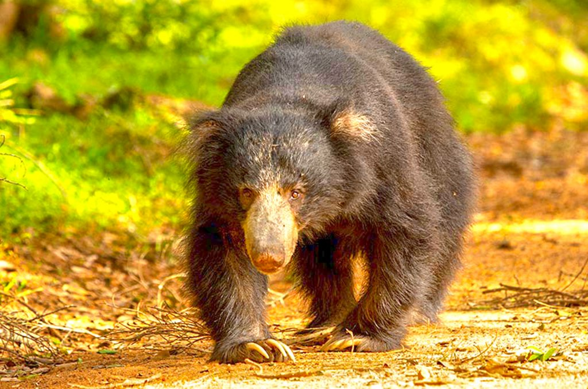
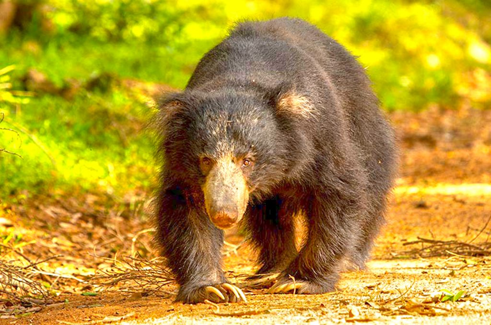
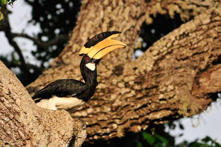
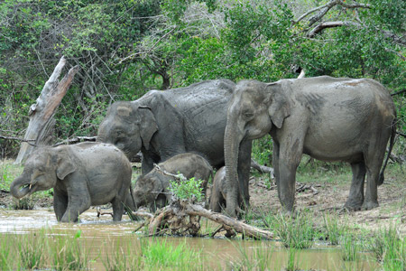
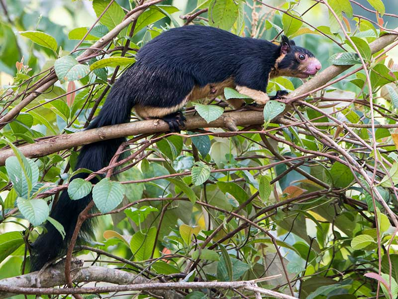
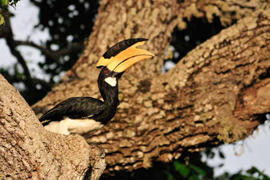
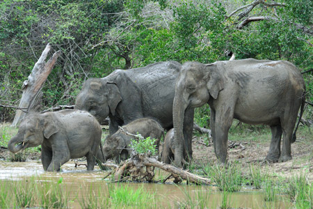
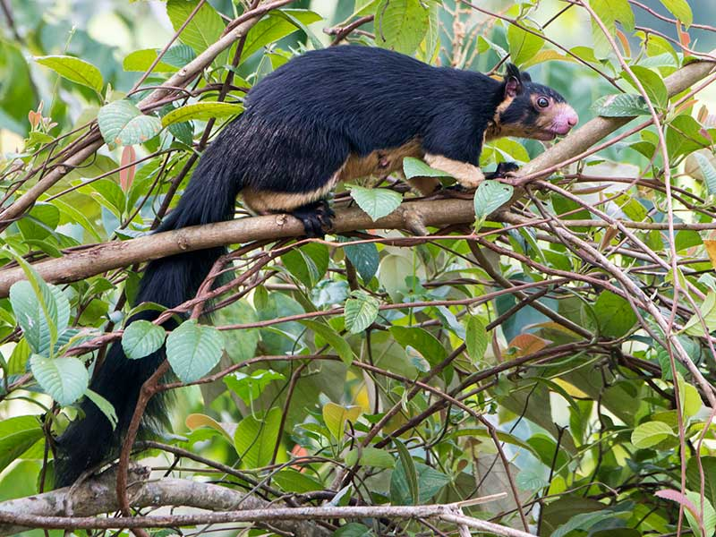

Welcome to the Department of Wildlife Conservationn
At the heart of our commitment to preserving the planet's natural heritage lies the Department of Wildlife Conservation. We are dedicated to the protection, management, and sustainable utilization of the rich and diverse wildlife that graces our landscapes. Our mission is to ensure the delicate balance of ecosystems, promote biodiversity, and foster a harmonious coexistence between humans and wildlife.
 

 




